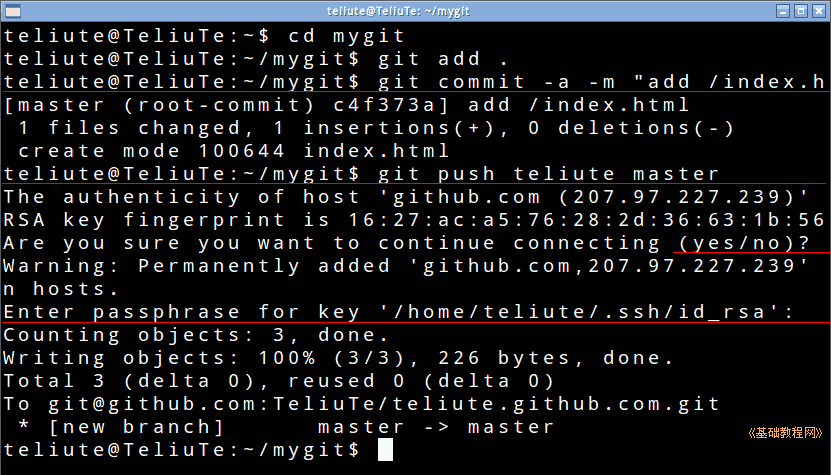
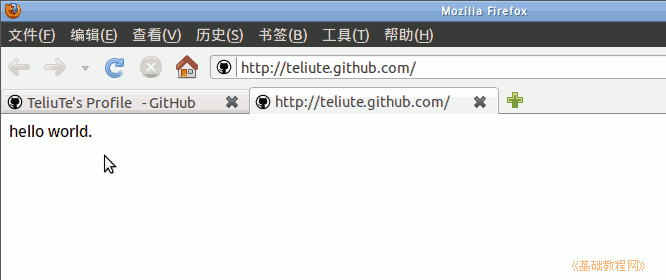

git 操作指南
作者：TeliuTe 来源：基础教程网
五、上传文件 返回目录 下一课在本地创建好文件后，就可以上传到服务器；
1、上传文件
1）打开终端，切换到自己的 mygit 文件夹；
~$ cd mygit
2）接下来输入 git add . 添加文件命令，这儿的点代表当前文件夹；
~/mygit$ git add .
3）然后输入提交到本地库命令 git commit -a -m "add /index.html" 双引号里是注释，说明这次操作的内容；
~/mygit$ git commit -a -m "add /index.html"
4）再提交到远程 github 库中 git push teliute master 这里的 teliute 就是上节创建的别名，改成自己的，后面的 master 表示是库的主分支，
~/mygit$ git push teliute master
出来提示那儿输入 yes，后面是输入自己的ssh私钥密码；

5）稍等一会，再打开自己的网站地址就可以看到前面创建的主页；

本节学习了上传文件的基础知识，如果你成功地完成了练习，请继续学习下一课内容；
本教程由86团学校TeliuTe制作|著作权所有
基础教程网：http://teliute.org/
美丽的校园……
转载和引用本站内容，请保留版权信息和本站链接。